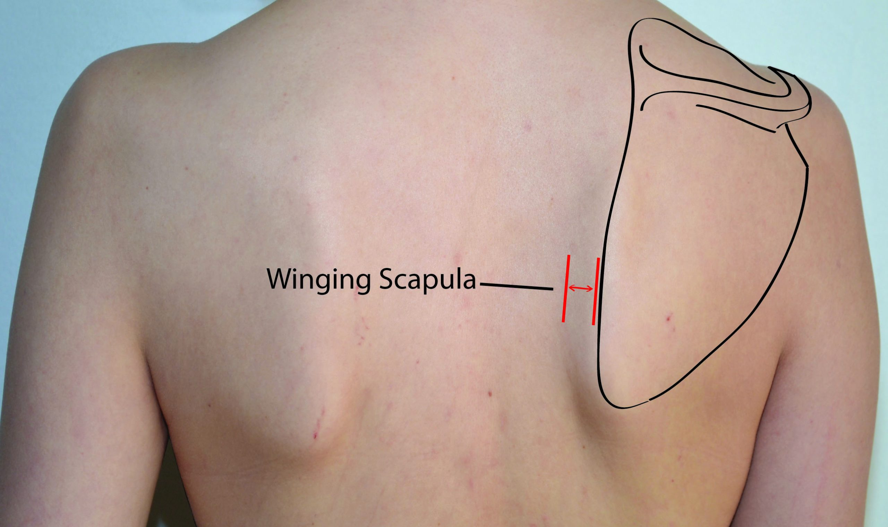

Functional Fitness
Our aim is to help people move better by educating people how the right movement mechanics can help you relief pain and help towards an injury free life.
Movement and postural assessment
Your fitness journey start with a movement screening to highlight any major dysfuntions in your movement patterns. for more information click on the above link to look into more
Your body MOT check
Basic information on your blood pressure, body composition, resting heart rate can highlight if your at increased risk of common diseases such as heart disease, diabetes. We can help you identify how much at risk you are and realistic time frames to take you out of risk and back to optimum health.
Basic cardiovascular and strength guidelines
To help you train smart you first need to identify your current cardiovascular and strength fitness to see how you compare to the general population. This will help you benchmark your progress and give your targets and guidelines of the norms to which your less likely of certain injuries and diseases. cardiovascular health is important for heart health and to combat against diabetes and obesity, and strength training helps improve bone density and is better at increasing lean muscle mass which is great for feeling good and burning extra calories at rest
Low Back Pain
With so many people now working from home people are experiencing back pain more than ever and it's most likely caused by lifestyle habits of the modern working life. Its common knowledge that sitting at an office all day is bad for your back and now that gyms, fitness classes and sporting activity is closed, people will be feeling the effects on their body more than ever.
Fat Loss
according to the NHS website there are 11,117 hospital admissions directly attributed to obesity with 67% of adult men and 60% of adult women being overweight or obese. losing weight is seen by most to be hard graft and not being able to eat and enjoy good food. Fat loss can be a reletively quick process with the right lifestyle changes and awareness of dietary intake
Knee Pain
The knee takes a lot of stress and is designed to absorb the stresses place on it during activities, such as, walking, running, jumping, kicking and many other activities. However many people experience pain in this region which is most likely due to poor lower body biomechanics during activities resulting in excessive forces passing through the knee. like all joints, they can only compensate so much before the area gets injured. Pain is a good indicator to fix the problem before irreversible damage is caused.
Shoulder Pain and Scapula winging
Many people avoid pressing exercises due to pain associated in the shoulder. The range of motion in the shoulder and how the shoulder girdle is designed means there are a lot of exercises to stress the shoulder complex doing it more harm than good. Poor thoracic posture can also contribute to the problem making the shoulder a typical place for people to experience pain. training to move better can help you towards functional movements like pressing again without it causing pain.
Core Training
Core training is very popular because everybody wants flat toned abs. However training your abs in the common way can lead to back pain as common abs exercises involve a lot of flexion and extention movements. Variations os squat and deadlifts are also associated to the core and its important to train your body in a balanced way to not cause injury.
Training
The aim of training is to get your moving pain free. That's the ability of squating, lifting, pushing and pulling pain free without the need of restricting what you do.
Your occupation can be the cause of some pain your experience whether your a builder who's putting your body under stress in awkward positions, or whether your slumped over a desk 8 hours a day or anywhere in between. The aim is to re-programme your movement patterns and strengthen your joints and muscles so you can tackle the day pain free.
We also want to install the habit of training so your hitting the government and ACSM guidelines of training cardiovascular and strength training so a healthy lifestyle becomes a long term habit.